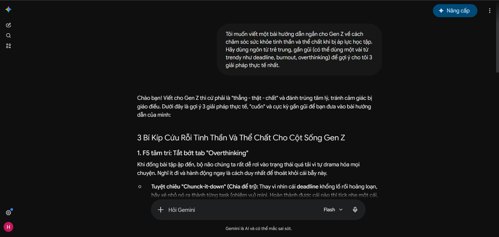
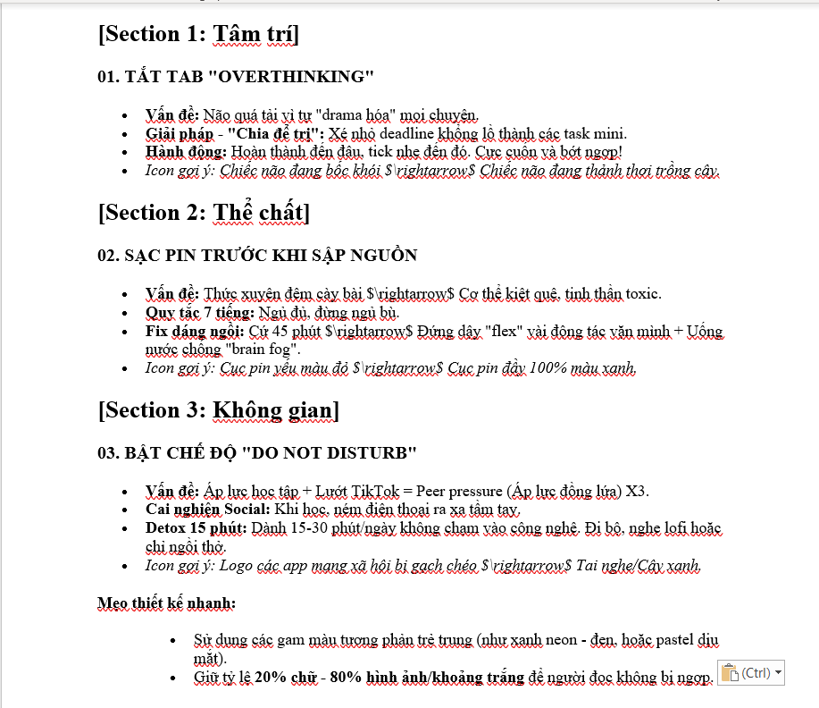
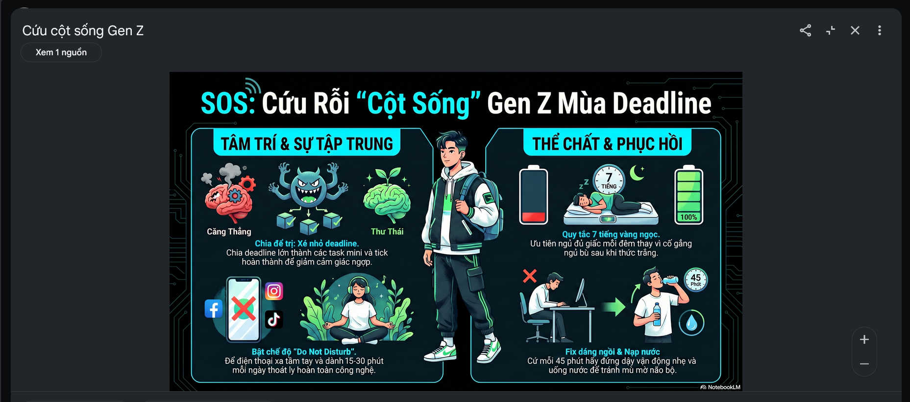

Ứng dụng AI trong sáng tạo infographic
Mục tiêu bài làm: Thành thạo việc sử dụng các công cụ AI tạo sinh để hỗ trợ quá trình sáng tạo nội dung số.
Giới thiệu dự án
Chủ đề: Cẩm nang 'Sống Sót' Cho Sinh Viên Qua Mùa Deadline.
Mục tiêu: Tạo một infographic ngắn gọn, sinh động, sử dụng ngôn ngữ Gen Z để giúp học sinh/sinh viên chăm sóc sức khỏe tinh thần và thể chất khi bị áp lực học tập.
Công cụ AI sử dụng
-
Google Gemini
Lên ý tưởng, viết nội dung và biên tập ngôn ngữ.
-
Nano Banana 2 (Gemini Image Generator)
Tạo bộ icon minh họa dạng 3D độc quyền bám sát chủ đề.
-
Canva AI
Hỗ trợ tạo bố cục và thiết kế sản phẩm cuối cùng.
Quá trình sáng tạo và tích hợp AI
Công cụ AI tạo văn bản: Gemini
Prompt sử dụng: “Tôi muốn viết một bài hướng dẫn ngắn cho Gen Z về cách chăm sóc sức khỏe tinh thần và thể chất khi bị áp lực học tập. Hãy dùng ngôn từ trẻ trung, gần gũi (có thể dùng một vài từ trendy như deadline, burnout, overthinking) để gợi ý cho tôi 3 giải pháp thực tế nhất.”

Rút gọn nội dung cho infographic
Tôi đã tóm tắt lại các nội dung quan trọng để văn bản phù hợp hơn với định dạng infographic:
- TẮT TAB "OVERTHINKING".
- SẠC PIN TRƯỚC KHI SẬP NGUỒN.
- BẬT CHẾ ĐỘ "DO NOT DISTURB".
Công cụ AI hỗ trợ thiết kế: NotebookLLM
Tài liệu mà tôi cung cấp:

Kết quả:
Sản phẩm cuối cùng:

So sánh và phân tích công cụ AI
Dựa trên kết quả thực tế, tôi nhận thấy các công cụ AI hỗ trợ rất tốt nhưng không thể thay thế hoàn toàn tư duy con người.
- Google Gemini (Văn bản): Điểm mạnh là nắm bắt ngôn ngữ Gen Z cực nhanh ("cứu rỗi", "cột sống") và tạo cấu trúc 3 mục hợp lý. Điểm yếu là văn bản AI đôi khi hơi dài, đòi hỏi kỹ năng biên tập để cô đọng thông tin cho phù hợp infographic.
- NotebookLLM (Tạo hình ảnh và thiết kế infographic): Điểm mạnh là hỗ trợ thiết kế bám sát tài liệu, đầy đủ, chi tiết, hình ảnh bắt mắt. Nhưng điểm yếu là không thể sửa trực tiếp mà phải thông qua prompt.
Vai trò của AI và các vấn đề đạo đức cần cân nhắc
Cách AI thay đổi quy trình sáng tạo
AI đã chuyển hóa vai trò của tôi từ một "người thợ" (phải tự viết từng chữ, tự vẽ từng nét) thành một "người đạo diễn và biên tập viên". Quy trình giờ đây là sự đối thoại: tôi đưa ra chỉ thị (prompt) -> AI phác thảo nhanh -> tôi phản biện, gọt giũa và lắp ghép.
AI giúp tiết kiệm khoảng 70% thời gian tạo tài nguyên thô, để tôi tập trung 100% năng lượng vào tính thẩm mỹ và thông điệp.
Các vấn đề đạo đức
- Sự minh bạch: Cần trung thực thừa nhận mức độ sử dụng AI trong sản phẩm, tránh nhận vơ toàn bộ các hình ảnh 3D đẹp mắt là do mình tự vẽ.
- Bản quyền: Các công cụ tạo ảnh học từ dữ liệu khổng lồ của các nghệ sĩ trên internet. Việc lạm dụng chúng cho mục đích thương mại lớn có thể tiềm ẩn rủi ro tranh chấp.
- Tính nguyên bản: Nếu quá phụ thuộc vào văn bản của Gemini hay bố cục của Canva, người thiết kế sẽ dần mất đi tiếng nói và phong cách cá nhân. Do đó, quy tắc giữ vững "đóng góp cá nhân >50%" thông qua việc biên tập văn bản, chọn lọc icon, và phối màu/bố cục riêng là một ranh giới đạo đức cần thiết để bảo vệ sự sáng tạo của con người.
Đánh giá tổng quan
Kết hợp AI và tư duy con người giúp tạo infographic hiệu quả, sáng tạo và phù hợp mục tiêu học thuật.